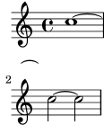

2.9 Schwierige Korrekturen
Hier finden sich einige Klassen an schwierigeren Anpassungen.
- Ein Typ der schwierigen Anpassungen ist die Erscheinung von
Strecker-Objekten wie Binde- oder Legatobögen. Zunächst wird
nur eins dieser Objekte erstellt, und sie können mit dem
normalen Mechanismus verändert werden. In einigen Fällen
reichen die Strecker jedoch über Zeilenumbrüche. Wenn das
geschieht, werden diese Objekte geklont. Ein eigenes
Objekt wird für jedes System erstellt, in dem es sich befindet.
Sie sind Klone des originalen Objektes und erben alle
Eigenschaften, auch
\override-Befehle.Anders gesagt wirkt sich ein
\overrideimmer auf alle Stücke eines geteilten Streckers aus. Um nur einen Teil eines Streckers bei einem Zeilenumbruch zu verändern, ist es notwendig, in den Formatierungsprozess einzugreifen. Das Callbackafter-line-breakingenthält die Schemefunktion, die aufgerufen wird, nachdem Zeilenumbrüche errechnet worden sind und die Layout-Objekte über die unterschiedlichen Systeme verteilt wurden.Im folgenden Beispiel wird die Funktion
my-callbackdefiniert. Diese Funktion- bestimmt, ob das Objekt durch Zeilenumbrüche geteilt ist,
- wenn ja, ruft sie alle geteilten Objekte auf,
- testet, ob es sich um das letzte der geteilten Objekte handelt,
- wenn ja, wird
extra-offsetgesetzt.
Diese Funktion muss in Tie (Bindebogen) installiert werden, damit der letzte Teil eines gebrochenen Bindebogens neu ausgerichtet wird.
#(define (my-callback grob) (let* ( ; have we been split? (orig (ly:grob-original grob)) ; if yes, get the split pieces (our siblings) (siblings (if (ly:grob? orig) (ly:spanner-broken-into orig) '() ))) (if (and (>= (length siblings) 2) (eq? (car (last-pair siblings)) grob)) (ly:grob-set-property! grob 'extra-offset '(-2 . 5))))) \relative { \override Tie.after-line-breaking = #my-callback c''1 ~ \break c2 ~ 2 }

Wenn man diesen Trick anwendet, sollte das neue
after-line-breakingauch das alteafter-line-breaking-Callback aufrufen, wenn es vorhanden ist. Wenn diese Funktion etwa mitHairpin(Crescendo-Klammer) eingesetzt wird, sollte auchly:spanner::kill-zero-spanned-timeaufgerufen werden. - Manche Objekte können aus technischen Gründen nicht mit
\overrideverändert werden. Beispiele hiervon sindNonMusicalPaperColumnundPaperColumn. Sie können mit der\overrideProperty-Funktion geändert werden, die ähnlich wie\once \overridefunktioniert, aber eine andere Syntax einsetzt.\overrideProperty Score.NonMusicalPaperColumn % Grob-Bezeichnung #'line-break-system-details % Eigenschaftsbezeichnung #'((next-padding . 20)) % Wert
Es sollte angemerkt werden, dass
\override, wenn man es aufNonMusicalPaperColumnundPaperColumnanwendet, immer noch innerhalb der\context-Umgebung funktioniert.